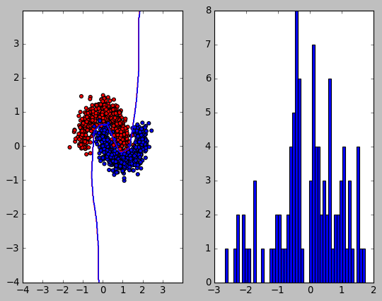
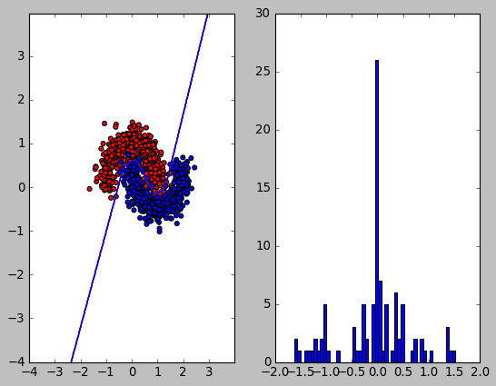
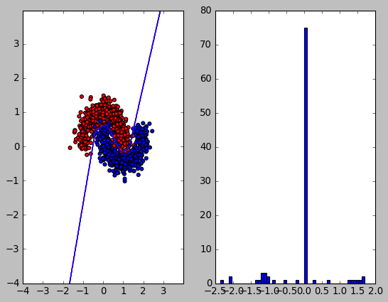
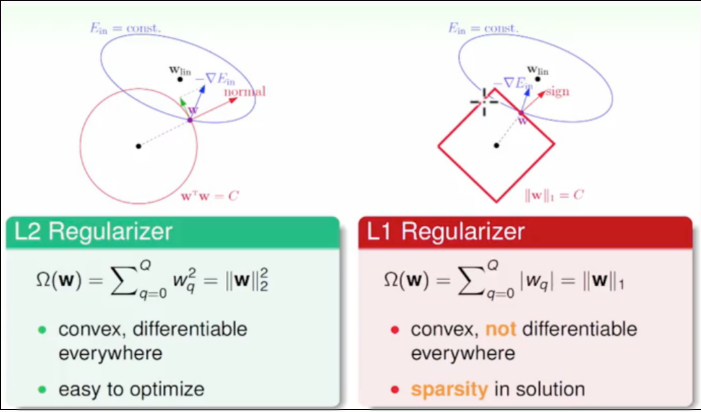

Regularization
Table of Contents
1. Regularization
1.1. 正则化的直观理解
以 L2 正则化为例, 假设加上损失函数之前:
- \(loss=C0\)
- \(\frac{\partial}{\partial{w_i}}loss= d0\)
加上 L2 正则化后:
- \(loss=C0+\frac{\alpha}{2}\sum{w^2}\)
- \(\frac{\partial}{\partial{w_i}}loss= d0+\alpha w_i\)
- 正则化后, 由损失函数的格式可知, w 会变得偏小
- w 变小, 会导致拟合曲线更加平滑. 因为在拟合曲线中, w 是 x 的系数, w 偏小即曲线的斜率会普遍变小, 从而更平滑
- 从 svm 的角度来看, L2 正则化项相当于一个约束, 要求 \(||w||\) 为某个值
- w 变小, 导致样本中的少量噪音并不会使损失函数有很大的变化, 从而减小训练时噪音的影响
1.2. 增加样本
正则化是为了解决 overfitting 问题. 模型中的变量与样本的比值越大, 越容易发生 overfitting. 所以在不减少模型中变量的数目的前提下, 增加样本可以减轻 overfitting
1.3. 简化网络
- 减少 ANN hidden layer 的个数
- 减少神经元的个数
1.4. L2 和 L1 正则化
1.4.1. 无正则化
import numpy as np import matplotlib.pyplot as plt from sklearn.datasets import make_moons from matplotlib.colors import ListedColormap from torch.utils.data import Dataset, DataLoader import torch model = torch.nn.Sequential( torch.nn.Linear(2, 50), torch.nn.ReLU(), torch.nn.Linear(50, 1), torch.nn.Sigmoid()) class MoonDataset(Dataset): def __init__(self): X, Y = make_moons(n_samples=1000, noise=0.2) self.X = torch.from_numpy(X).float() self.Y = torch.from_numpy(Y).float().view(-1, 1) def __getitem__(self, index): return self.X[index], self.Y[index] def __len__(self): return len(self.X) dataset = MoonDataset() loader = DataLoader(dataset, batch_size=100) criterion = torch.nn.BCELoss() optimizer = torch.optim.Adam(model.parameters()) def add_regularization(loss): return loss def train(): for i in range(1000): for x, y in loader: loss = criterion(model(x), y) loss = add_regularization(loss) optimizer.zero_grad() loss.backward() optimizer.step() def visualize(): cm = ListedColormap(['#FF0000', '#0000FF']) plt.subplot(121) plt.scatter(x=dataset.X[:, 0], y=dataset.X[:, 1], c=dataset.Y[:, 0], cmap=cm) xx, yy = np.meshgrid(np.arange(-4, 4, 0.02), np.arange(-4, 4, 0.02)) X = np.c_[xx.ravel(), yy.ravel()] y_hat = model(torch.from_numpy(X).float()).detach().numpy() y_hat = (y_hat > 0.5)[:, 0] y_hat = y_hat.reshape(xx.shape) cm = ListedColormap(['#FF0000', '#0000FF']) plt.contour(xx, yy, y_hat, cmap=cm) x = next(model.parameters()).view(-1, 1) plt.subplot(122) plt.hist(x.detach().numpy(), bins=50) plt.show() return sum(x) train() visualize()
tensor([-7.9089])

1.4.2. L2 正则化
def add_regularization(loss): for name, param in model.named_parameters(): if 'bias' not in name: loss = loss + 0.5 * (0.001 * torch.sum(torch.pow(param, 2))) return loss train() visualize()
tensor([-5.5809])

可以看到 L2 正则化使得 w 的值变得较小
1.4.3. L1 正则化
def add_regularization(loss): for name, param in model.named_parameters(): if 'bias' not in name: loss = loss + (0.001 * torch.sum(torch.abs(param))) return loss train() visualize()
tensor([-7.9170])

L1 正则化:
- \(loss=C0+\frac{\alpha}{m}\sum{abs(w)}\)
\(\frac{\partial}{\partial{w_i}}loss= d0+\frac{\alpha}{m}*sgn(w_i)\)
L1 正则化与 L2 相比, 对 w 的修正是一个定值, 而不像 L2 那样是一个与 w 成比例的值. 这就导致当 w 较小时, L1 修正的范围会比 L2 大, 导致 w 容易减到 0 附近. 当 w 较大时, L1 修正的范围比 L2 小, 导致 w 较大.
反映到上面的直方图中, 许多值在零附近, 但值的范围与无正则化时类似.
所以 L1 会使得 w 比较稀疏, 适合做特征选择 (选择较大的 w 对应的特征)
1.4.4. 另一种解释
从 SVM 的角度来看, 正则化项可以看作是原优化问题的不等式约束, 例如对于 L2 来说, 即是 \(\sum{w_i^2} <= C\)
假设 w 为二维, 而 L2 是把 w 约束在一个圆内, 而 L1 是把 w 约束在一个菱形中.

可以看到 L1 优化时非常容易取得顶点位置, 导致部分权重为 0
1.5. Dropout
1.6. Batch Normalization
1.7. pytorch 中使用正则化
pytorch 通过 optim 的 weight_decay 实现 L2 正则化, 而不是 把 L2 加到 loss 上再进行 backward.
class SGD(Optimizer): def step(): # ... for p in group['params']: d_p = p.grad.data if weight_decay != 0: # add_ 会把 weight_decay*p.data 加到 p.grad.data 上 d_p.add_(weight_decay, p.data) # ...
1.7.1. weight_decay 和 l2 regularization 是等价的
\(C_0\) 为原始的 loss
加入 l2 regularization 后 \(C=C_0+\frac{\lambda}{2}w^2\)
梯度为: \(\frac{\partial C}{\partial w}=\frac{\partial C_0}{\partial w}+\lambda w\)
梯度更新后 \(w-\eta\frac{\partial C}{\partial w}= (1-\eta \lambda)w-\eta \frac{\partial C_0}{\partial w}\)
可以看到加入 l2 regularization 后相当于把先把 w 乘上一个系数 \(1-\eta \lambda\) 后再用原来的 loss 做梯度更新. 这里的系数 \(1-\eta\lambda\) 就相当于 pytorch 中的 wegith_decay 参数, 这里也能看出来 l2 regularization 对 w 的修正是与 w 的值成例的.
Backlinks
Auxiliary Classifier (Inception > Network > Auxiliary Classifier): inception 模型会输出两个 softmax, 分别为 F, G, 其中 F 称为 auxiliary classifier. F, G 训练时使用相同的标签, F 人为的增加了训练的难度, 相当于一种 regularization 的手段.
Inception (Inception > Network > Label Smoothing): 类似于知识蒸馏中的 soft label, 可以看做一种 regularization 手段.